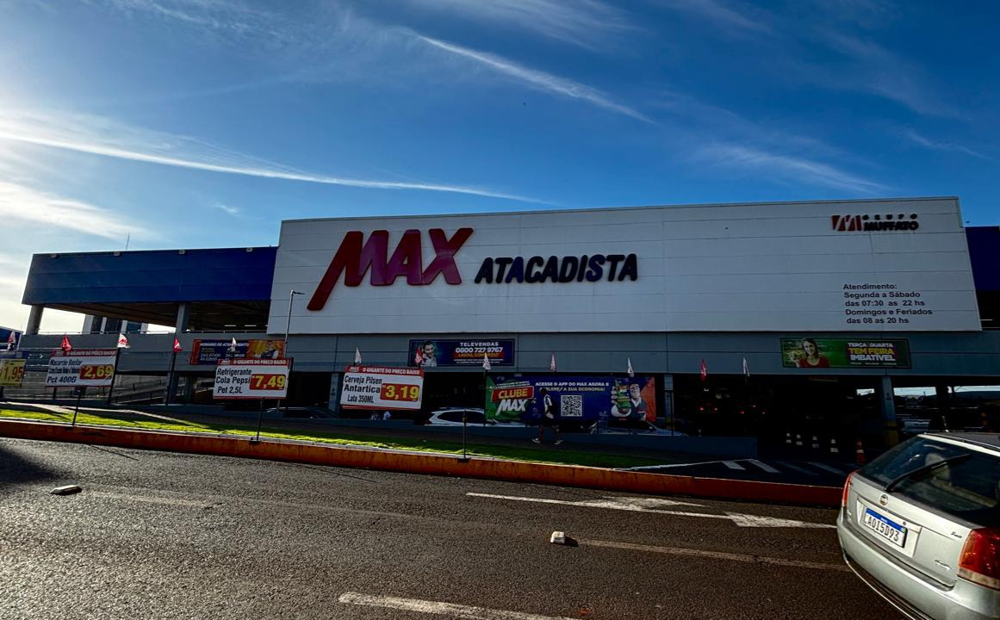
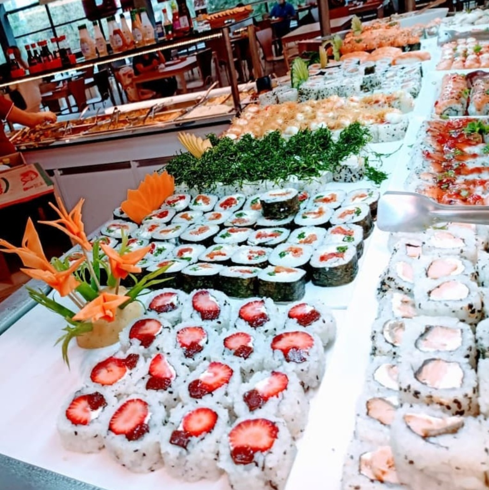
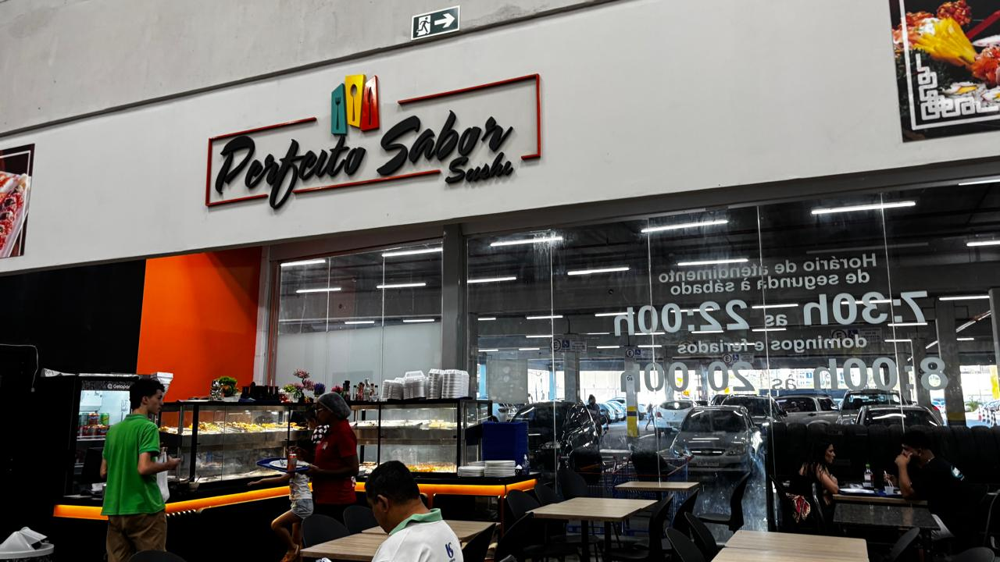
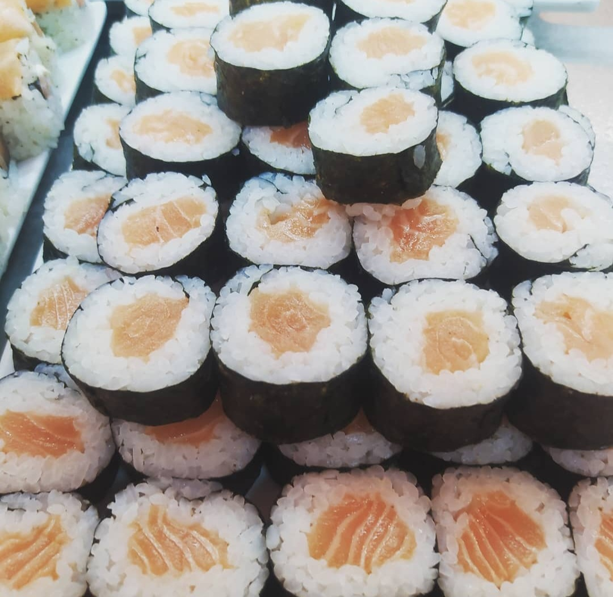
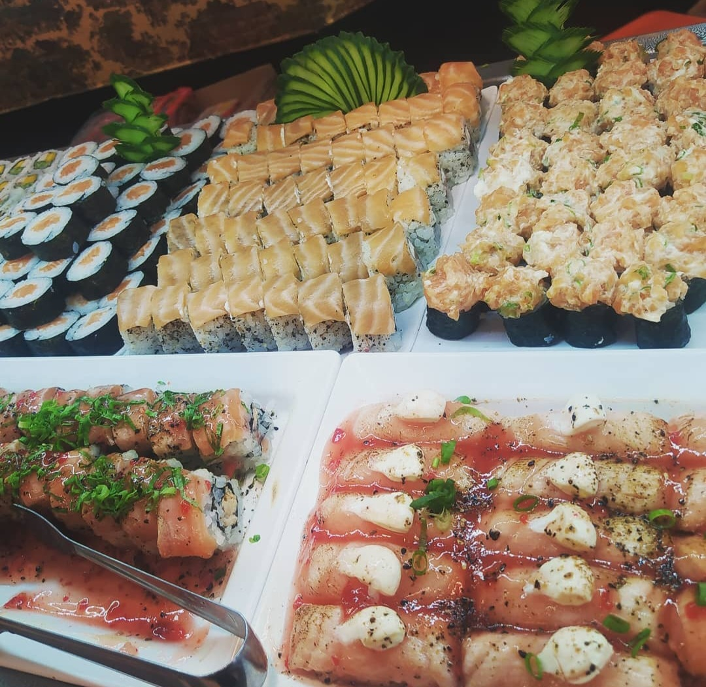

Restaurante • Ourinhos - SP
O Perfeito Sabor Culinária Oriental LTDA leva para Ourinhos uma experiência gastronômica marcada por sabor, qualidade e cuidado no preparo de cada prato.
Especializado em culinária oriental, o restaurante oferece opções preparadas com atenção aos detalhes, combinando ingredientes selecionados, apresentação caprichada e um atendimento que valoriza a satisfação do cliente.
Localizado em ponto estratégico, dentro do Max Atacadista, o Perfeito Sabor une praticidade, conveniência e excelente comida para quem busca uma refeição saborosa no dia a dia ou em momentos especiais.
É a escolha ideal para quem aprecia a culinária oriental e deseja encontrar qualidade, bom atendimento e uma experiência diferenciada em cada pedido.
Endereço: Rua Cardoso Ribeiro, 861 - Sala 03
Referência: Dentro do Max Atacadista
Cidade: Ourinhos - SP
Falar no WhatsApp Ligar✔ Culinária oriental ✔ Refeições saborosas e bem preparadas ✔ Atendimento rápido e prático ✔ Localização estratégica dentro do Max Atacadista ✔ Opções para o dia a dia e momentos especiais



